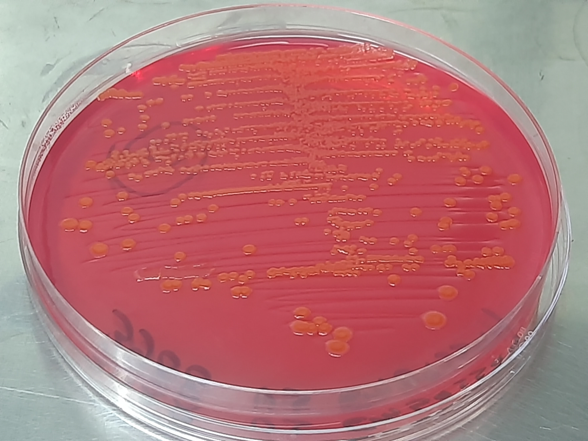
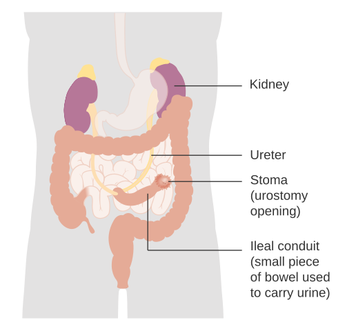

3090 — Bacteriuria không triệu chứng vs nhiễm khuẩn tiểu có triệu chứng ở trẻ có bể chứa ruột / Asymptomatic bacteriuria versus symptomatic UTI in children with an enteric urinary reservoir
Tags: pattern:bacteriuria pattern:nhiem-khuan-tieu pattern:khang-thuoc pattern:viem-dai-thang-do-khang-sinh vung:tiet-nieu vung:bang-quang anatomy:be-chua-ruot protocol:cay-nuoc-tieu protocol:CIC protocol:khang-sinh incidentaloma:bacteriuria
Mức chắc chắn (certainty): tổng hợp y văn (literature synthesis) — ghép một loạt 186 trẻ CIC (Spinal Cord 2022, PMID 34446838), một loạt 22 trẻ sau tăng dung tích bàng quang (Sci Rep 2024, PMC10879155), hai loạt neobladder ở người lớn (BJU Int 2005, PMID 16042736; BJU Int 2008, PMID 18070190), hướng dẫn EAU/ESPU/ERN 2025 (Eur Urol Open Sci 2026, PMC13136771) và hướng dẫn IDSA 2019 về bacteriuria không triệu chứng (Clin Infect Dis 2019, PMID 30895288). Không có ca do nhóm tự chụp.
Câu hỏi thực hành: bé trai 9 tuổi, bàng quang thần kinh do thoát vị tủy–màng tủy, tăng dung tích bàng quang bằng hồi tràng + lỗ thông Mitrofanoff cách đây 4 năm. Đến khám định kỳ, không sốt, không đau, không nôn, nước tiểu hơi đục và có nhầy. Mẹ mang theo kết quả cấy từ túi dẫn lưu (stoma bag): E. coli > 10⁵ CFU/mL, "nhiều bạch cầu"; mẹ xin kháng sinh vì "lần trước bác sĩ cũng cho". Bài chốt ba quyết định: (1) cấy dương là nền của bể chứa ruột, không phải chẩn đoán — 77% trẻ CIC và tới 100% trẻ sau tăng dung tích bàng quang có bacteriuria không triệu chứng; (2) chỉ điều trị khi có ≥ 2 triệu chứng (trong đó sốt ≥ 38 °C là quan trọng nhất) + cấy ≥ 10⁵ CFU/mL một loại vi khuẩn + ≥ 10 bạch cầu/HPF, và không điều trị bacteriuria không triệu chứng (IDSA 2019: chỉ điều trị khi có thai hoặc trước thủ thuật niệu khoa xâm lấn có chấn thương niêm mạc); (3) mẫu cấy phải lấy qua lỗ thông/catheter mới, không lấy từ túi — mẫu từ túi thường nhiều loại vi khuẩn và dẫn tới kháng sinh sai. Nối 3086 – CAUTI ở trẻ, 3058 – Xuất huyết từ mảnh ghép ruột sau tăng dung tích bàng quang, 3009 – Dò bàng quang–ruột sau tăng dung tích bàng quang, 691 – Sỏi bàng quang và sỏi quanh catheter.
1. Tổng quan bệnh học – cơ chế hình ảnh: vì sao bể chứa ruột "luôn có vi khuẩn"
- Bể chứa ruột không phải bàng quang: niêm mạc hồi tràng tiết chất nhầy, không có lớp glycosaminoglycan chống bám dính của niêm mạc niệu, không có phản xạ rửa sạch, và không co bóp tống hết nước tiểu. Chất nhầy + nước tiểu tồn lưu + CIC đẩy vi khuẩn từ da/lỗ thông vào = môi trường nuôi cấy liên tục (PMC10879155).
- TẠI SAO cấy dương gần như chắc chắn: 22 trẻ sau tăng dung tích bàng quang, 100% (22/22) có bacteriuria không triệu chứng tại lần theo dõi cuối; E. coli 18/22, Klebsiella 1, Citrobacter 1, Streptococcus agalactiae 1, Morganella 1 (PMC10879155). Ở 186 trẻ CIC (281 mẫu), bacteriuria không triệu chứng 77% (95% CI 72–82%), E. coli 71%, Klebsiella 13%, Proteus 10% (PMID 34446838).
- TẠI SAO "nhiều bạch cầu" không giúp phân biệt: trong 119 mẫu nước tiểu của 40 bệnh nhân neobladder, 118/119 có bạch cầu, và nồng độ bạch cầu trung bình ở mẫu vô khuẩn là 1181/µL so với 491/µL ở mẫu có bacteriuria không triệu chứng (p < 0,05) — tức bạch cầu niệu không tương quan thuận với nhiễm khuẩn, vì niêm mạc hồi tràng phản ứng với vi khuẩn khác niêm mạc bàng quang (PMID 18070190). Đây là lý do không được dùng pyuria làm chốt nhiễm trùng ở bể chứa ruột.
- TẠI SAO cấy dương không đồng nghĩa bệnh: vi khuẩn trong bể chứa sống trong màng sinh học (biofilm) trên niêm mạc ruột và trong chất nhầy; không xâm nhập mô thì không gây sốt, không tăng CRP, không tăng bạch cầu máu. Loạt neobladder ghi không có chỉ số viêm tăng và không triệu chứng dù mật độ vi khuẩn cao (PMID 18070190).
- TẠI SAO điều trị bacteriuria không triệu chứng lại có hại: mỗi đợt kháng sinh chọn lọc vi khuẩn đề kháng. Ở 186 trẻ CIC: ESBL 11%, đa kháng (MDR) 9%, 16% mẫu dương có ESBL và/hoặc MDR (PMID 34446838); loạt 22 trẻ sau tăng dung tích: 55,6% E. coli đề kháng quinolone dù chỉ 5,6% đề kháng cefazolin (PMC10879155). Thêm nguy cơ viêm đại tràng do C. difficile, dị ứng, và che lấp nhiễm trùng thật khiến lần sốt sau bị điều trị muộn.
- TẠI SAO vẫn phải sợ nhiễm trùng thật: khi vi khuẩn lên thận, viêm thận–bể thận ở bệnh nhân neobladder là nguyên nhân suy thận mạn ít được nhận ra (Kidney Int Rep 2023, PMC10719585); thủng tự phát bể chứa xảy ra 1/22 trẻ sau 3,4 năm, biểu hiện sốc nhiễm khuẩn E. coli và phải mổ (PMC10879155). Vậy thái độ đúng là không điều trị bacteriuria, nhưng không bỏ qua triệu chứng.
- TẠI SAO sốt ≥ 38 °C là mốc: hướng dẫn EAU/ESPU định nghĩa nhiễm khuẩn tiểu ở trẻ CIC bằng ≥ 2 triệu chứng lâm sàng (sốt ≥ 38 °C, đau bụng/lưng, són tăng lên, đau khi tiểu, nước tiểu hôi) + ≥ 100.000 CFU/mL một loại vi khuẩn + ≥ 10 bạch cầu/HPF; cấy dương đơn thuần không đủ vì bacteriuria không triệu chứng rất thường gặp ở người CIC (PMC13136771).

Thạch CLED (cysteine–lactose–electrolyte-deficient) là môi trường chuẩn cho cấy nước tiểu: khuẩn lạc vàng cam, bóng = vi khuẩn lên men lactose (E. coli điển hình). Bài học của ảnh không nằm ở việc "có khuẩn lạc", mà ở chỗ cùng một hình ảnh này xuất hiện ở trẻ hoàn toàn khỏe mạnh và ở trẻ sốt 39 °C — quyết định nằm ở lâm sàng + số lượng + loài, không ở đĩa thạch. Nguồn: Wikimedia Commons, CC BY 4.0 (Ajay Kumar Chaurasiya), nguyên bản.
*Sơ đồ một đoạn ruột được tách ra làm bể chứa dẫn nước tiểu và lỗ thông ra da (stoma): niệu quản đổ vào đoạn ruột, đoạn ruột thông ra thành bụng. Ở trẻ có lỗ thông Mitrofanoff, đường vào là catheter — nơi vi khuẩn từ da và từ tay người chăm sóc được đưa vào bể chứa mỗi lần CIC, giải thích vì sao cấy dương là chuyện thường ngày. Nguồn: Cancer Research UK, Wikimedia Commons, CC BY-SA 4.0, nguyên bản.*2. Mẫu hình + chẩn đoán phân biệt theo HỘI CHỨNG (Gamut)
- Không triệu chứng, cấy dương → bacteriuria không triệu chứng (ASB) — không điều trị.
- Đau khi tiểu, đau trên xương mu, són tăng, nước tiểu hôi, không sốt → viêm bàng quang/bể chứa có triệu chứng — điều trị ngắn, cấy trước khi dùng kháng sinh.
- Sốt ≥ 38 °C + đau lưng/mạn sườn, không có ổ nhiễm khác → viêm thận–bể thận (febrile UTI) — cấy máu nếu nặng, siêu âm thận–bể chứa để loại tắc nghẽn, kháng sinh 7–10 ngày.
- Sốt + ứ nước trên siêu âm → tắc nghẽn do hẹp miệng nối niệu quản–bể chứa/sỏi (bài 3010, 691) — kháng sinh đơn thuần sẽ thất bại, cần dẫn lưu.
- Đau bụng cấp sau CIC, bụng gồng, sốt, nước tiểu ít → thủng bể chứa (bài 3009) — cấp cứu ngoại khoa, không phải "nhiễm trùng tiểu".
- Tiêu chảy sau đợt kháng sinh → C. difficile, không phải UTI tái phát.
- Nước tiểu đục/nhầy mạn, cấy nhiều loại → mẫu bẩn/ống thông sai kỹ thuật, không phải nhiễm trùng.
- Gợi nhớ "POUCH": Perforation (thủng), Obstruction (tắc), Urinary sepsis, Clostridium sau kháng sinh, Hygiene/specimen error (lấy mẫu sai).
3. Bảng so sánh phân biệt (ma trận đối chiếu)
| Thực thể (entity) | Hình ảnh/xét nghiệm điển hình | Chốt vào (rule-in) | Chốt loại (rule-out) | Gợi ý xác nhận |
|---|---|---|---|---|
| Bacteriuria không triệu chứng | Cấy ≥ 10⁵ CFU/mL một loài (thường E. coli); bạch cầu niệu có thể có; CRP/bạch cầu máu bình thường; siêu âm bình thường | Cấy dương + hoàn toàn không triệu chứng + không tăng chỉ số viêm | Sốt ≥ 38 °C, đau lưng, són tăng, CRP tăng → không còn là ASB | Không cấy định kỳ; nếu đã cấy thì không điều trị |
| Nhiễm khuẩn tiểu có triệu chứng (viêm bàng quang/bể chứa) | Cấy ≥ 10⁵ CFU/mL + ≥ 10 bạch cầu/HPF; siêu âm: thành bể chứa dày, không ứ nước | ≥ 2 triệu chứng (đau tiểu, đau trên xương mu, són tăng, nước tiểu hôi) + cấy + bạch cầu niệu | Không triệu chứng → ASB; cấy nhiều loài → mẫu bẩn | Cấy qua lỗ thông/catheter mới; điều trị 5–7 ngày theo kháng sinh đồ |
| Viêm thận–bể thận (febrile UTI) | Sốt ≥ 38 °C + đau mạn sườn; siêu âm: ứ nước thận ± sỏi; CT/MR khi nghi áp-xe | Sốt + đau lưng + cấy dương + bạch cầu niệu, không ổ nhiễm khác | Siêu âm bình thường + không sốt → không phải viêm thận | Siêu âm thận–bể chứa; cấy máu nếu nhiễm khuẩn huyết; kháng sinh 7–10 ngày |
| Tắc nghẽn (hẹp miệng nối/sỏi) có nhiễm khuẩn | Ứ nước–niệu quản trên siêu âm/CT; sỏi cản quang; thành bể chứa dày | Sốt + ứ nước + cấy dương | Không ứ nước → ít khả năng tắc | Siêu âm → CT không cản quang/CT niệu; dẫn lưu + kháng sinh |
| Thủng bể chứa | Dịch tự do/khí ngoài lòng ruột, dày thành, tụ dịch quanh bể chứa trên CT; X-quang có khí tự do (không nhạy) | Đau bụng cấp sau CIC + sốt + bụng gồng ± nước tiểu ít | Không đau bụng, sinh hoạt bình thường → loại | CT bụng–chậu có cản quang; mổ cấp cứu |
| Sỏi bể chứa | CT không cản quang: cấu trúc cản quang trong lòng bể chứa, có thể ứ nước | Sỏi trên CT + đái máu/đau liên quan CIC | Không sỏi → tìm nguyên nhân khác | CT không cản quang; nội soi/tán sỏi (bài 691) |
| Viêm đại tràng do C. difficile | Tiêu chảy nhiều lần sau kháng sinh, bạch cầu máu tăng, độc tố A/B dương; bụng chướng | Tiêu chảy sau kháng sinh + độc tố dương | Không tiêu chảy, không dùng kháng sinh trước đó → loại | Xét nghiệm độc tố; ngừng kháng sinh gây bệnh |
| Mẫu cấy bẩn (từ túi/da) | ≥ 3 loài, số lượng thấp, có vi khuẩn da (coagulase-negative staphylococci, Corynebacterium) | Nhiều loài + lấy từ túi | Một loài ≥ 10⁵ từ catheter mới → mẫu đúng | Lấy lại qua lỗ thông/catheter mới trước khi kết luận |
4. Protocol lấy mẫu – diễn giải – điều trị + phòng ngừa
- Khi nào cấy: chỉ khi có triệu chứng (sốt, đau lưng/bụng, đau tiểu, són tăng rõ) hoặc trước thủ thuật niệu khoa xâm lấn có chấn thương niêm mạc (sinh thiết, tán sỏi, đặt stent); không cấy định kỳ ở trẻ không triệu chứng — IDSA 2019 không khuyến cáo sàng lọc/điều trị ASB, chỉ trừ thai kỳ và trước thủ thuật niêm mạc (PMID 30895288).
- Lấy mẫu đúng: đặt catheter mới vô khuẩn qua lỗ thông Mitrofanoff/niệu đạo, bỏ 2–5 mL đầu, lấy phần giữa; không lấy từ túi dẫn lưu (bag) hoặc từ bề mặt stoma; gửi phòng xét nghiệm < 2 giờ (hoặc bảo quản lạnh 4 °C) — mẫu để lâu → bội nhiễm, số lượng sai.
- Diễn giải: ≥ 10⁵ CFU/mL một loài = bacteriuria; ≥ 3 loài = nghi mẫu bẩn → lấy lại trước khi dùng kháng sinh. Bạch cầu niệu/ nitrite không dùng để chốt (bạch cầu có ở 118/119 mẫu neobladder; nitrite âm ở vi khuẩn Gram dương và mẫu nhiều loài — PMID 18070190).
- Ngưỡng điều trị (EAU/ESPU 2025): ≥ 2 triệu chứng trong đó sốt ≥ 38 °C là dấu hiệu nặng nhất + ≥ 10⁵ CFU/mL một loài + ≥ 10 bạch cầu/HPF (PMC13136771). Sốt đơn thuần không có triệu chứng tiết niệu phải tìm ổ nhiễm khác trước khi quy cho bể chứa.
- Kháng sinh: cấy trước, dùng kháng sinh theo kháng sinh đồ; khởi đầu theo kháng sinh đồ lần trước + dịch tễ địa phương nếu đang sốt. Viêm bàng quang/bể chứa: 5–7 ngày; sốt/viêm thận–bể thận: 7–10 ngày. Tránh quinolone khi có lựa chọn khác (đề kháng 55,6% trong loạt trẻ — PMC10879155).
- Hình ảnh: siêu âm thận–bể chứa là bước đầu khi sốt (tìm ứ nước, sỏi, tụ dịch); CT bụng–chậu có cản quang khi nghi thủng/tắc phức tạp; DMSA chỉ để đánh giá sẹo thận muộn, không dùng cho ASB.
- Phòng ngừa: kỹ thuật CIC sạch, làm rỗng hoàn toàn, điều trị táo bón, uống đủ nước; không dùng kháng sinh dự phòng liên tục (giảm nhiễm nhưng tăng đề kháng, bằng chứng xung đột — PMC13136771); ca kháng trị có thể xem xét bơm gentamicin nội bể theo hướng dẫn, nhưng phải chọn bệnh nhân.
- Theo dõi sau đợt: nếu sốt tái diễn ≥ 2 lần/6 tháng, tìm hẹp miệng nối, sỏi, ứ nước, dò (bài 3009, 3010, 691) trước khi tăng kháng sinh.
flowchart TD
A[Trẻ có bể chứa ruột + cấy nước tiểu dương] --> B{Có triệu chứng?}
B -->|Không| C[ASB: KHÔNG kháng sinh; không cấy định kỳ]
B -->|Có| D{≥ 2 triệu chứng, có sốt ≥ 38 °C?}
D -->|Không| E[Theo dõi 24–48 giờ; cấy lại nếu xấu đi]
D -->|Có| F[Lấy mẫu đúng qua lỗ thông/catheter mới + cấy + siêu âm thận–bể chứa]
F --> G{Có ứ nước/sỏi/tụ dịch?}
G -->|Có| H[Dẫn lưu + kháng sinh; can thiệp nguyên nhân: nong/stent/tán sỏi]
G -->|Không| I[Kháng sinh theo kháng sinh đồ: 7–10 ngày nếu sốt]
I --> J{Sốt tái diễn ≥ 2 lần/6 tháng?}
J -->|Có| K[Tìm hẹp miệng nối, sỏi, dò, thủng kín]
J -->|Không| L[Theo dõi; tái khám khi có triệu chứng]
H --> M[Đánh giá lại chức năng thận + sẹo thận muộn]
5. Biến thể bình thường và cạm bẫy
- "Nước tiểu đục và hôi" = nhiễm trùng: sai. Bể chứa ruột luôn có nhầy và luôn có vi khuẩn; mùi phụ thuộc chế độ ăn, thời gian ứ, loài vi khuẩn, không phải dấu hiệu mô nhiễm.
- Pyuria là chốt: sai. 118/119 mẫu neobladder có bạch cầu, và bạch cầu trung bình cao hơn ở mẫu vô khuẩn (1181 vs 491/µL) — pyuria phản ánh viêm niêm mạc ruột, không phải xâm nhập vi khuẩn.
- Nitrite âm loại trừ UTI: sai. Nitrite âm trong Gram dương, mẫu nhiều loài, bể chứa rỗng nhanh (nitrat cần ≥ 4 giờ lưu).
- Cấy từ túi dẫn lưu: mẫu bội nhiễm kinh điển; kết quả ≥ 3 loài là dấu hiệu lấy sai, không phải "nhiễm trùng đa khuẩn".
- Dùng kháng sinh trước khi có kết quả cấy ở trẻ không sốt: làm mất cơ hội biết loài/kháng sinh đồ, tăng đề kháng, và không cải thiện triệu chứng vì không có nhiễm trùng mô.
- Kháng sinh dự phòng liên tục sau vài đợt "nhiễm trùng": tạo vòng lặp đề kháng – bùng phát – kháng sinh mạnh hơn; bằng chứng về lợi ích xung đột và tăng đề kháng đã được ghi nhận (PMC13136771).
- Sốt ở trẻ có bể chứa luôn là UTI: phải khám toàn thân (phổi, tai–mũi–họng, da, catheter) vì viêm phổi/viêm tai giữa ở trẻ bàng quang thần kinh dễ bị quy sai; cấy máu khi nhiễm khuẩn huyết.
- Bỏ sót thủng bể chứa: đau bụng sau CIC + sốt + nước tiểu ít có thể là thủng tự phát (1/22 trẻ, sau 3,4 năm — PMC10879155); X-quang không nhạy, cần CT và mổ.
- Không điều trị ASB bị hiểu là "không cần theo dõi": vẫn phải khám định kỳ, siêu âm, chức năng thận, B12 (bài 3089); chỉ không điều trị vi khuẩn không triệu chứng.
6. Tự lượng giá — Blind Quiz
Ca 1 — Bé trai 9 tuổi, khám định kỳ, cấy từ túi dương, hoàn toàn không triệu chứng.
- Gợi ý lâm sàng: 4 năm sau ileocystoplasty + Mitrofanoff, không sốt, CRP bình thường, siêu âm thận bình thường.
- Câu hỏi: Có cần kháng sinh? Vì sao? Nếu muốn chắc chắn mẫu đúng thì làm gì?
Bấm để hiện đáp án (findings + chẩn đoán)
- Đây là bacteriuria không triệu chứng (ASB): 77% trẻ CIC và 100% trẻ sau tăng dung tích bàng quang có ASB (PMID 34446838; PMC10879155).
- Không kháng sinh (IDSA 2019: chỉ điều trị thai kỳ và trước thủ thuật niêm mạc; EAU/ESPU: cấy dương đơn thuần không đủ — PMID 30895288; PMC13136771).
- Mẫu từ túi là mẫu sai; nếu cần cấy lại, lấy qua lỗ thông/catheter mới, bỏ 2–5 mL đầu.
- Vì sao: điều trị ASB không cải thiện kết cục nhưng chọn lọc ESBL 11%/MDR 9% (PMID 34446838).
Ca 2 — Cùng bệnh nhi, 3 tuần sau sốt 39,2 °C, đau lưng phải, nôn; cấy qua lỗ thông: E. coli 10⁵.
- Gợi ý lâm sàng: không ho, không đau tai, không tiêu chảy; siêu âm thận phải ứ nước độ 2.
- Câu hỏi: Chẩn đoán? Vì sao kháng sinh đơn thuần có thể thất bại? Bước nào bắt buộc trước khi kết luận "kháng sinh thất bại"?
Bấm để hiện đáp án (findings + chẩn đoán)
- Chẩn đoán: viêm thận–bể thận trên nền tắc nghẽn (sốt ≥ 38 °C + đau lưng + cấy 10⁵ + ứ nước độ 2).
- Kháng sinh đơn thuần thất bại vì ứ nước do hẹp miệng nối niệu quản–bể chứa/sỏi — cần dẫn lưu (nong bóng/stent qua da hoặc mở thận ra da) + kháng sinh (bài 3010, 691).
- Bắt buộc: siêu âm thận–bể chứa trước/ngay khi bắt đầu kháng sinh; nếu sốt tái diễn ≥ 2 lần/6 tháng → tìm hẹp/sỏi/dò.
- Phản biện: bằng chứng định nghĩa UTI ở trẻ CIC đến từ hướng dẫn EAU/ESPU (PMC13136771); IDSA 2019 không bao gồm trẻ em, nên phải phối hợp cả hai — không áp nguyên văn tiêu chuẩn người lớn.
Ca 3 — Bé gái 7 tuổi, 3 lần "nhiễm trùng tiểu" trong 4 tháng, mỗi lần cấy từ túi có 3 loài.
- Gợi ý lâm sàng: mỗi đợt sốt nhẹ 37,8–38,2 °C, không đau lưng; siêu âm bình thường; đã dùng 3 đợt kháng sinh khác nhau.
- Câu hỏi: Sai ở đâu? Làm gì để cắt vòng lặp kháng sinh?
Bấm để hiện đáp án (findings + chẩn đoán)
- Mẫu từ túi + ≥ 3 loài = mẫu bẩn, không phải nhiễm trùng đa khuẩn; sốt nhẹ không ổ + không đau lưng không đủ tiêu chuẩn nhiễm khuẩn tiểu.
- Làm lại: cấy qua lỗ thông/catheter mới, chỉ khi có ≥ 2 triệu chứng, kèm CRP + siêu âm; khám tìm ổ nhiễm khác.
- Nếu vẫn sốt tái diễn: tìm hẹp miệng nối, sỏi, dò, thủng kín (bài 3009/3010/691) trước khi nghĩ "kháng sinh yếu".
- Bài học: kỹ thuật lấy mẫu là một phần của chẩn đoán; đổi mẫu trước khi đổi kháng sinh.
Bài liên quan chéo
- 3086 – CAUTI ở trẻ và cai sonde (bacteriuria do sonde lưu — cùng nguyên lý "cấy dương ≠ nhiễm trùng")
- 3058 – Xuất huyết từ mảnh ghép ruột/dạ dày sau tăng dung tích bàng quang
- 3009 – Dò bàng quang–ruột sau tăng dung tích bàng quang (thủng/dò = cấp cứu)
- 3010 – Hẹp miệng nối niệu quản–bàng quang
- 691 – Sỏi bàng quang và sỏi quanh catheter
- 3089 – Thiếu B12 và thiếu máu megaloblastic sau tăng dung tích bàng quang (phần "theo dõi dài hạn" không phải kháng sinh)
Ảnh
images/3090_bacteriuria_cay-nuoc-tieu_Wikimedia-CLED-CCBY40.jpg— khuẩn lạc E. coli trên thạch CLED, CC BY 4.0.images/3090_bacteriuria_so-do-ileal-conduit_Wikimedia-CRUK-CCBYSA40.png— sơ đồ bể chứa ruột/lỗ thông, CC BY-SA 4.0.- Chi tiết nguồn + giấy phép từng ảnh:
images/CREDITS.md; danh sách bài gốc:sources.md.
Không dùng để chẩn đoán độc lập khi chưa có người hướng dẫn.